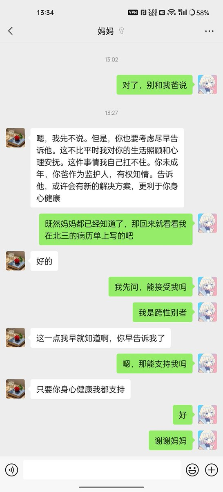

牧鸢
@LwrDHYyuxR22499
寄一半😀救出来的不少人都是妈同意爸不同意
然后钱还在他爸手里握着双方矛盾加剧最后导致一方一意孤行
我要没记错的话可橙助教就是被他家里人以做手术的名义骗走的在所谓的手术的前一天被扔进扭转学校去了
怎么还在坟头上蹦迪
当然你也可以就觉得我在贩卖焦虑

lsf🍥🏳️⚧️
@lianshufa
家长党！
与其等待炸柜，不如直接出柜，
和我妈聊了好久，我现在是家长党了！(当然，我爸还是家暴党) https://t.co/ypxZOOvXvU